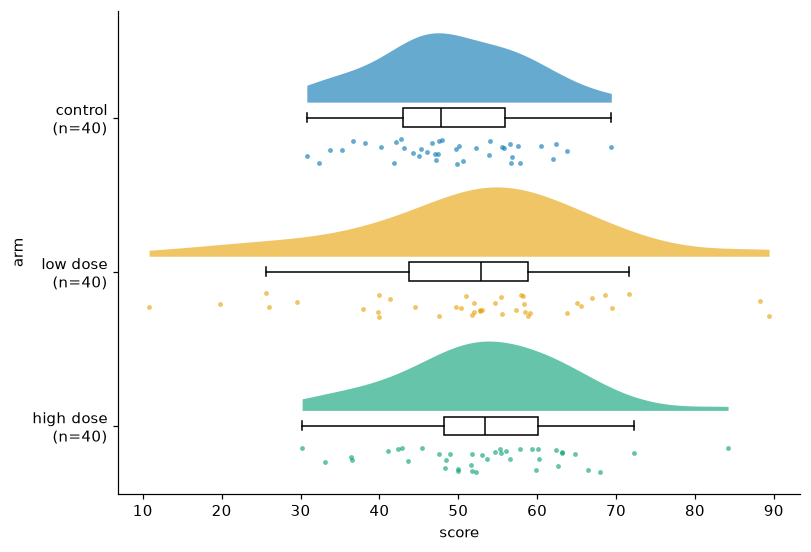
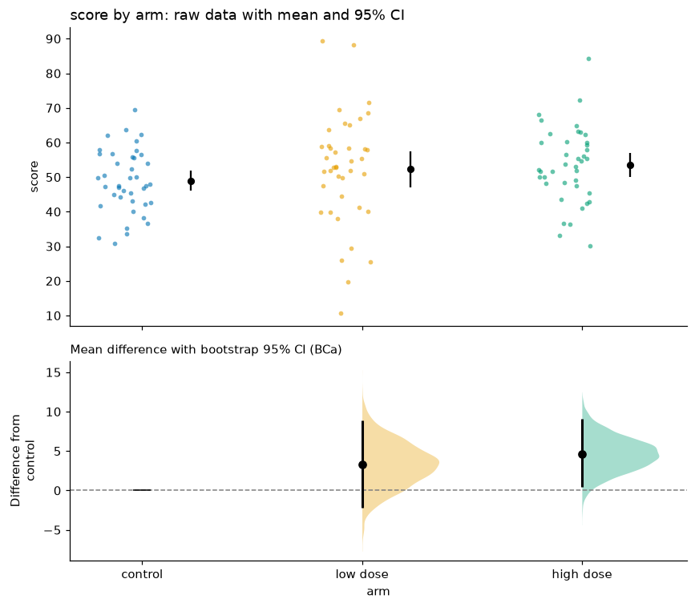
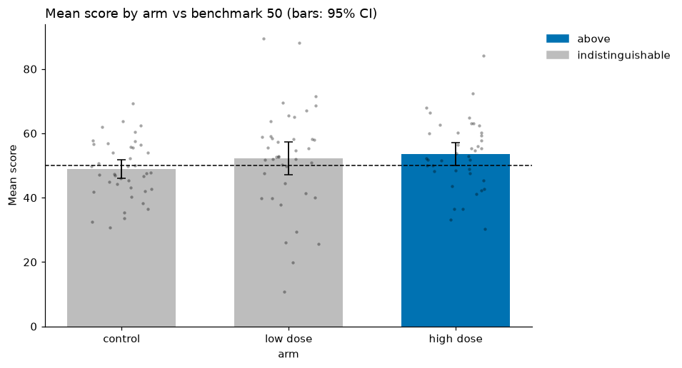

Comparing groups¶
Question: did the treatment arms score differently from control, and by how much?
We use the seeded trial dataset: 120 people in three arms (control,
low dose, high dose), each with a score.
1. Look at the data, not just the means¶
Bar charts of means ("dynamite plots") hide the sample size, the spread and any outliers; very different datasets produce identical bars (Weissgerber et al., 2015). Start with the raw observations:

| arm | n | mean | median | sd |
|---|---|---|---|---|
| control | 40 | 48.9 | 47.8 | 9.1 |
| low dose | 40 | 52.3 | 52.9 | 16.1 |
| high dose | 40 | 53.5 | 53.4 | 10.9 |
The low-dose arm is visibly more spread out (SD 16 vs 9). That matters for the test we choose next.
2. Estimate the effect with an estimation plot¶
res = vc.estimation_plot(trial, x="arm", y="score") # reference = first group ("control")
res.info["comparisons"]

The top panel shows every observation, with each group's mean and 95% t-interval. The bottom panel shows what you actually want to know, the difference from control: its bootstrap sampling distribution (the shaded curve) and its 95% bias-corrected and accelerated (BCa) bootstrap interval (Efron, 1987; Ho et al., 2019).
| group | difference | 95% CI | Hedges' g [95% CI] | Welch p | Holm-adjusted p |
|---|---|---|---|---|---|
| low dose | +3.3 | −2.2 to 8.8 | 0.25 [−0.19, 0.69] | 0.258 | 0.258 |
| high dose | +4.6 | 0.4 to 9.1 | 0.46 [0.01, 0.90] | 0.043 | 0.086 |
How to read it¶
- Low dose: the plausible effects run from about −2 to +9 points. The data are compatible with no effect and with a moderate benefit; the study cannot tell them apart.
- High dose: the estimate is +4.6 points (about half a standard deviation). The 95% interval just excludes zero, but after adjusting for the two comparisons against control (Holm, 1979) the p-value is 0.086. So there is suggestive, not conclusive, evidence of a benefit.
Why the CI and the adjusted p-value seem to disagree
Confidence intervals are reported per comparison and are not adjusted
for multiplicity; the Holm p-value is. Report both, and say which
comparisons you planned in advance. Set p_adjust="none" if you
pre-registered a single comparison.
Why these methods¶
- Welch's t-test, not Student's. Student's test assumes equal variances. Here the SDs are 9 and 16. Welch's test controls the error rate when variances differ and loses almost nothing when they are equal (Delacre, Lakens & Leys, 2017).
- Hedges' g puts the difference on a standardized scale for comparison across studies, with a small-sample bias correction (Hedges, 1981).
- Bootstrap CI for the raw difference makes no normality assumption about the sampling distribution.
3. Compare each group to a benchmark¶
If the question is "which groups beat a target of 50?", use benchmark_bar.
A group is only called above or below when its confidence interval
excludes the benchmark; otherwise it is indistinguishable:

Only the high-dose arm's interval (50.05–57.0) lies wholly above 50. Colouring bars by whether the mean is above the line would have flagged the low-dose arm too, even though its interval (47.1–57.4) comfortably contains 50.
Use error="se" or "sd" if your audience expects them, but the default CI
has a stated coverage and is harder to misread (Cumming & Finch, 2005).
4. Other comparison charts¶
lollipopranks many categories by a statistic (mean, median, sum, count).dumbbellshows before/after or A/B per item, sorted by change.divergent_barputs two measures back to back (a population pyramid).centered_barshows the share above vs below a threshold, with Wilson intervals (see Proportions and surveys).
References¶
See the Methodology page for full citations.